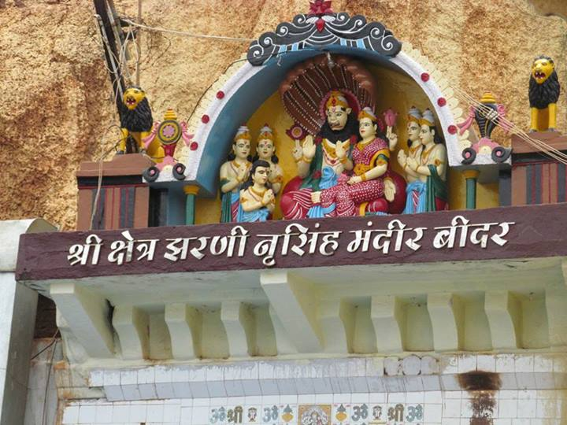
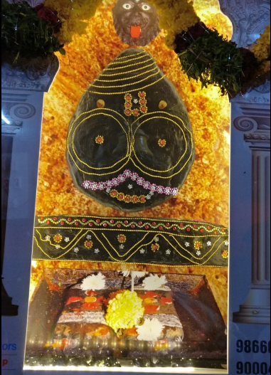
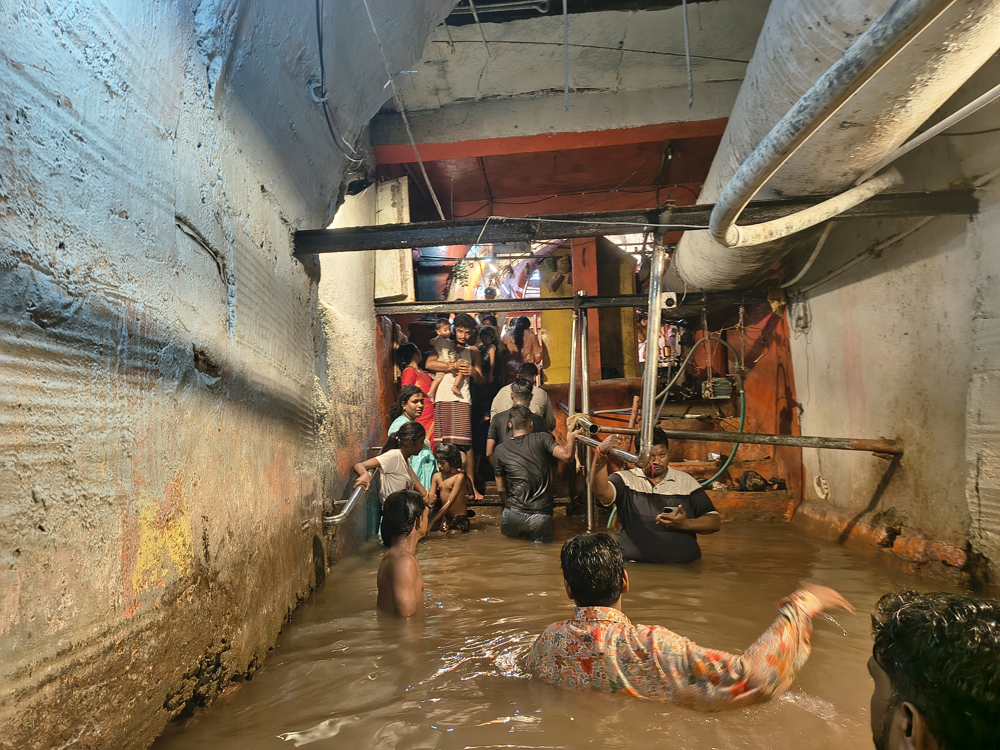
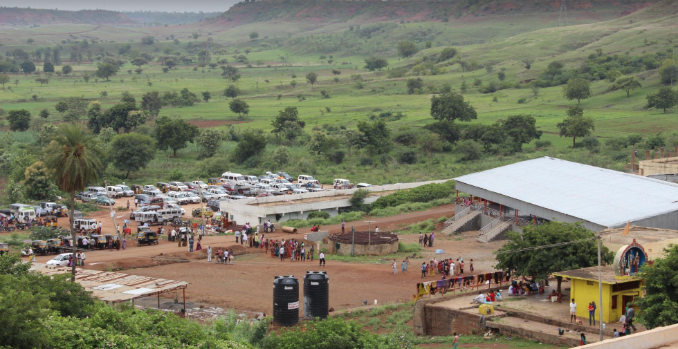

About Narasimha Jharni
Narasimha Jharni is a unique cave temple dedicated to Lord Narasimha, an incarnation of Lord Vishnu. It is located in Bidar, Karnataka, and is known for its water-filled cave and spiritual significance.
The temple is situated beneath the Manichoola hill range. Visitors walk through a cave tunnel filled with flowing water to reach the shrine.
History and Legend
According to local tradition, Lord Narasimha came to reside in this cave after defeating the demon Jharasura. The legend says that Jharasura requested Lord Narasimha to remain in the cave and bless devotees.
A naturally formed image of Lord Narasimha can be seen on the rock wall at the end of the cave. The continuous flow of water inside the cave is an important feature of this sacred place.
Temple Experience
The cave tunnel is approximately 300 metres long and contains flowing water. Devotees walk through the water to reach the inner shrine. The unique combination of a natural cave, flowing water and religious traditions makes Narasimha Jharni a special attraction in Bidar.
Narasimha Jharni Gallery
Explore the unique cave temple and surroundings of Narasimha Jharni.




📍 Location
Narasimha Jharni Temple, Mangalpet, Bidar, Karnataka, India
🗺️ View on Google Maps